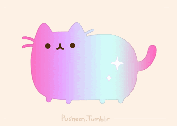

Kawaii Pastel Aesthetics
A cute, kawaii, pink theme for Sublime Text

Cute, kawaii, and pink theme for Sublime Text, made using tmTheme Editor after realizing that I could only find one cute theme for Sublime by @sailorhg (Fairy Floss). Not that perfect, but at least it's pink~

Installation
- Download the theme HERE
- In Sublime Text, go to Preferences -> Browse Packages...
- In the window that popped up, drag this theme into the folder.
- Choose the theme using Preferences -> Color Scheme -> Kawaii Pastel Aesthetics
- YOU KAWAII AS FUCK NOW, GO CODE THE NEXT BEST THING
